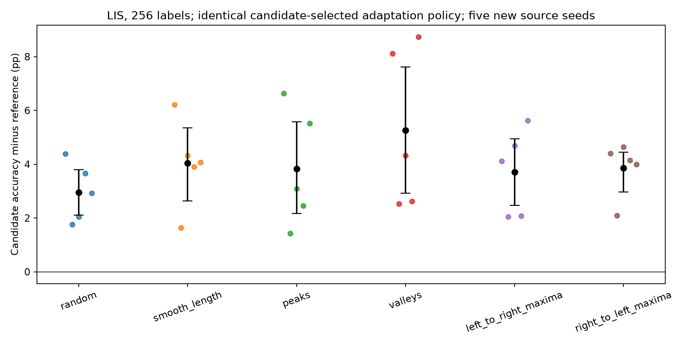

局部 LIS 迁移收益得到新源模型复核；数学关系的普适预测能力仍未建立。46 个源模型与 1,224 个目标端点全部完成，源代码和检查点、所有精确标签以及保存预测对应的准确率均核验通过。
描述性四目标汇总：共同策略、256 标签时，候选四目标平均准确率为 33.76%，长度基线为 33.27%，差值 +0.50 个百分点；recoils 单项仍低于长度基线 2.73 个百分点。因此目前最清楚的结果仍是 LIS 上的局部收益。
已见任务组身份参照 · 46 个源检查点采样核对 · 补充预测与长度基线核验 · 67 项回归检查 · 补充控制检查
候选来自上一轮结果，本轮方案在新数据生成与源训练前保存。新生成一个源训练数据世界，排除两套旧目标数据与先导排列数据；五个新种子为 [1009, 2027, 3037, 4051, 5059]。候选四任务组合与其四个单任务各训练五次，其余七组各三次，共 26 多任务模型、20 单任务模型。每模型固定 20,000 更新、每任务 640,000 曝光，采用同种子同输入采样与相同初始参数。
LIS、256 标签、所有候选与对照共同采用学习率 0.0003、100 次微调。这个参数来自旧候选验证选择，没有在新结果上调参。点为五个同种子准确率差值，区间为按源种子重采样的 95% 描述性 bootstrap 区间；测试输入共 4,200 个，各种子共用同一支持集及测试集。少量种子和固定数据下的区间不能替代跨数据世界复制。长度基线沿用旧带宽 2，仅用支持标签。

| 候选减参照 | 平均收益 | 种子 bootstrap 区间 | 正种子 |
|---|---|---|---|
| random | +2.96 pp | [+2.11, +3.80] pp | 5/5 |
| smooth_length | +4.03 pp | [+2.63, +5.36] pp | 5/5 |
| peaks | +3.83 pp | [+2.17, +5.58] pp | 5/5 |
| valleys | +5.27 pp | [+2.92, +7.61] pp | 5/5 |
| left_to_right_maxima | +3.71 pp | [+2.47, +4.95] pp | 5/5 |
| right_to_left_maxima | +3.86 pp | [+2.97, +4.45] pp | 5/5 |
| 种子 | 四任务候选 | 随机 | 单 peaks | 单 valleys | 单 LR maxima | 单 RL maxima | 长度 |
|---|---|---|---|---|---|---|---|
| 1009 | 39.86% | 35.48% | 33.21% | 31.74% | 35.74% | 35.45% | 33.64% |
| 2027 | 35.29% | 33.52% | 33.86% | 32.76% | 33.24% | 33.19% | 33.64% |
| 3037 | 37.98% | 35.93% | 34.88% | 33.64% | 33.29% | 33.33% | 33.64% |
| 4051 | 37.55% | 33.88% | 35.10% | 34.93% | 35.48% | 33.40% | 33.64% |
| 5059 | 37.71% | 34.79% | 32.19% | 28.98% | 32.10% | 33.71% | 33.64% |
全部四个单任务对照都列出；只有候选持续优于这些对照，才能进一步支持需要组合的说法。这里没有按测试挑选一个单任务或一个种子。
| 性质 | 候选组合中的源审计 | 单任务源审计 |
|---|---|---|
| peaks | 68.80% | 64.57% |
| valleys | 69.37% | 78.70% |
| left_to_right_maxima | 98.78% | 99.97% |
| right_to_left_maxima | 88.37% | 98.58% |
旧两套目标池在同组同种子同目标内先取收益平均；每个预测器只看到 96 行，不能把两池当成独立源训练复制。岭惩罚固定为 1，四个版本的权重在新数据生成前保存，数值预测在新源学习后、新迁移测试前保存。学习基线为源审计准确率、源验证曲线均值与目标指示变量；稳健性基线再加入源标签熵、联合熵、相关性及源—目标条件互信息。数学特征为恒等式阶数、正确的无约束指示变量、精确类别答案的变换 CKA、可证明向量作用及单因子置换比例。标签相似性使用源训练输入上的精确目标标签，属于分析参照，并未用于源优化。
新得分只使用每组预先指定的前三个新种子，共八组、四目标、96 个配对收益。候选额外两个种子不增加其预测指标权重。新预测检验的是新数据世界与新模型的同名任务组，不是未见组合。负 R² 表示预测仍比测试均值参照差；ΔR² 为正本身不足以说明可靠。
| 策略 | 标签 | 基线 | 基线 R² | 加关系 R² | ΔR² | 误差降低组数 |
|---|---|---|---|---|---|---|
| shared | 64 | source_learning | 0.204 | 0.253 | +0.049 | 7/8 |
| shared | 64 | source_learning_and_label_stats | 0.280 | 0.297 | +0.017 | 2/8 |
| shared | 256 | source_learning | 0.394 | 0.445 | +0.051 | 4/8 |
| shared | 256 | source_learning_and_label_stats | 0.416 | 0.451 | +0.035 | 4/8 |
| condition | 64 | source_learning | 0.235 | 0.251 | +0.016 | 4/8 |
| condition | 64 | source_learning_and_label_stats | 0.321 | 0.330 | +0.009 | 3/8 |
| condition | 256 | source_learning | 0.334 | 0.295 | -0.039 | 5/8 |
| condition | 256 | source_learning_and_label_stats | 0.434 | 0.337 | -0.097 | 3/8 |
误差差值的八组描述性重采样区间见 全部增量与区间，每组差值见 组级误差。固定八组合之间的组重采样不构成独立数据世界重复。
测试前固定方案 · 数据生成前的权重 · 迁移测试前的预测 · 旧数据整组留出 · 所有目标、预算与策略的对照 · 逐种子差值 · 全部组合结果 · 全部新预测得分 · 输入来源 · 核验
补充：已见任务组身份的预测参照在新迁移开始前追加固定，与原四个主要版本分开报告。